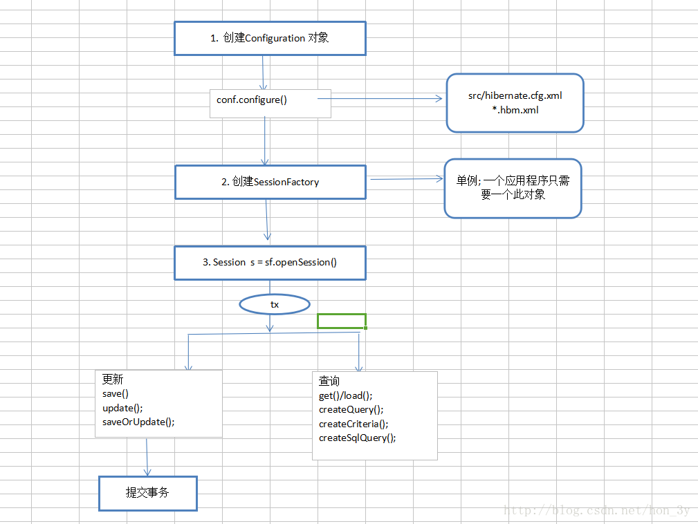
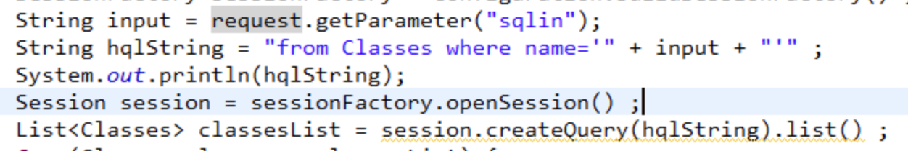

Hibernate
目录
简介
和Mybatis一个性质，用于数据库操作的。
配置文件
想要让一个数据库操作（DAO层）的代码跑起来，需要提前配置两个配置文件：一般与JavaBean对象同目录的 *.hbm.xml（用于对象映射），和配置数据库连接信息的hibernate.cfg.xml。
下面是hbm.xml的一个例子，将User类的几个属性对映到数据库中的对应column
<!--在domain包下-->
<hibernate-mapping package="zhongfucheng.domain">
<!--类名为User，表名也为User-->
<class name="User" table="user">
<!--主键映射，属性名为id，列名也为id-->
<id name="id" column="id">
<!--根据底层数据库主键自动增长-->
<generator class="native"/>
</id>
<!--非主键映射，属性和列名一一对应-->
<property name="username" column="username"/>
<property name="cellphone" column="cellphone"/>
<property name="password" column="password"/>
</class>
</hibernate-mapping>
hibernate.cfg.xml的例子
<hibernate-configuration>
<!-- 通常，一个session-factory节点代表一个数据库 -->
<session-factory>
<!-- 1. 数据库连接配置 -->
<property name="hibernate.connection.driver_class">com.mysql.jdbc.Driver</property>
<property name="hibernate.connection.url">jdbc:mysql:///zhongfucheng</property>
<property name="hibernate.connection.username">root</property>
<property name="hibernate.connection.password">root</property>
<!--
数据库方法配置， hibernate在运行的时候，会根据不同的方言生成符合当前数据库语法的sql
-->
<property name="hibernate.dialect">org.hibernate.dialect.MySQL5Dialect</property>
<!-- 2. 其他相关配置 -->
<!-- 2.1 显示hibernate在运行时候执行的sql语句 -->
<property name="hibernate.show_sql">true</property>
<!-- 2.2 格式化sql -->
<property name="hibernate.format_sql">true</property>
<!-- 2.3 自动建表 -->
<property name="hibernate.hbm2ddl.auto">create</property>
<!--3. 加载所有映射-->
<mapping resource="zhongfucheng/domain/User.hbm.xml"/>
</session-factory>
</hibernate-configuration>
用法

注入
数据库相关的框架总绕不过sql注入。
Hibernate的查询操作支持SQL（原生SQL语句），HQL（只需写少量SQL语句），QBC（不用谢SQL语句，但用的不多）和主键查询（通过表的主键来定位数据，也是不用写SQL语句）
sql语句简单拼接导致注入
没啥好说的

HQL注入
HQL查询并不直接发送给数据库，而是由hibernate引擎对查询进行解析并解释，然后将其转换为SQL。
但是HQL注入是有限制的
常见业务代码
一般来说，如下的代码是安全的，使用了setParameter（或者setParameterList）预编译，但是order by仍存在安全问题可以审计一下
public List<Post> getByName_Secure(String name) {
Query query = em.createQuery("SELECT p FROM Post p where p.name=:name", Post.class);
query.setParameter("name", name);
return (List<Post>) query.getResultList();
}
但是在HQL中进行简单的拼接，一样会造成sql注入，具体怎么注入看下文。
Query query = em.createQuery("SELECT p FROM Post p where p.name='" + name + "'", Post.class);
return (List<Post>) query.getResultList();
由于HQL会根据不同的数据库（mysql，oracle，mssql）来使用指定的解析方式，所以各种数据库的HQL注入方式都有些差别。
Mysql
HQL语句执行时，会先转换为对应数据库的SQL语句，然后执行SQL语句实现数据库操作。 造成sql注入的原因：HQL被解析为恶意sql语句。
在HQL解析时
转义符\ 在HQL中是普通字符，不做处理 在HQL中，两个单引号''在被转换成SQL语句时会变成一个转义单引号 \'
那么HQL语句 ..... id=1\'' or 1=1—+ (....表示省略前面不重要的HQl语句)
经过HQL变换后会变成。..... id=1\\' or 1=1 —+
MYSQL里，\被认为是转义符，\\就表示一个单纯的字符\，所以可以发现单引号被逃逸了出来